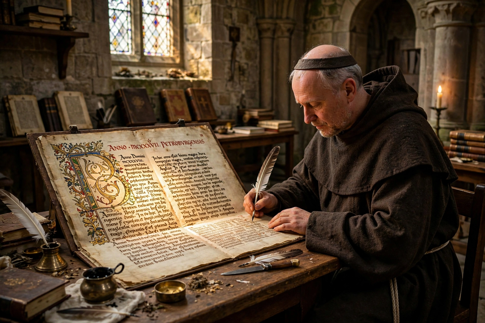

The Peterborough Chronicle (also called the Laud Manuscript) is one of the versions of the Anglo-Saxon Chronicle, written at Peterborough Abbey in the 12th century. It is a vital source both for English history and for the history of the English language, because its later continuations were written in an early form of Middle English rather than the standard late West Saxon of earlier annals.

| Also known as | Laud Manuscript; Chronicle version E |
|---|---|
| Language | Old English, early Middle English |
| Date | Copy made c. 1121; continuations to 1154 |
| Provenance | Peterborough Abbey |
| Location | Bodleian Library, Oxford (Laud Misc. 636) |
After a fire at Peterborough Abbey in 1116 destroyed the monastery's copy of the Chronicle, a new copy was made around 1121 from an exemplar probably borrowed from Canterbury. Scribes then continued the annals locally: the First Continuation covers 1122–1131, and the Second (or Final) Continuation covers 1132–1154, ending with the death of King Stephen and the accession of Henry II.
The copied portion is written in standard literary Old English, but the continuations show rapid linguistic change: inflectional endings erode, vocabulary absorbs Old Norse and French loans, and grammar moves toward the analytic structure of Middle English. Linguists prize the Final Continuation as one of the earliest substantial texts in Middle English, bridging the gap between Old English and the language of Chaucer.
The Chronicle records the civil war of Stephen's reign, known as the Anarchy. Its famous entry for 1137 vividly describes famine, lawlessness, and suffering, saying that men "said openly that Christ and his saints were asleep." The Peterborough text also contains unique annals concerning the abbey itself.
The manuscript passed into the collection of Archbishop William Laud in the 17th century and is now held by the Bodleian Library at Oxford.
See also: Anglo-Saxon Chronicle · Peterborough Cathedral · Old English